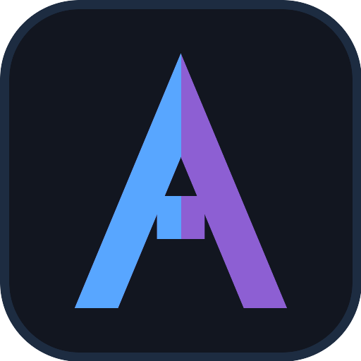

Accessibility Audit
This page intentionally contains accessibility issues. Audit it and list every problem you can find (labels, contrast, keyboard access, heading order, focus, ARIA). Expand the answer key at the bottom to compare.
Ticket form (has issues)
Low contrast helper text that is hard to read.
Submit ticket (looks like a link)
Keyboard traps & order
There is a focusable element placed out of visual order, and a control with no visible focus indicator.
Skipped heading level (h1 then h4)
Heading structure jumps from h1 to h4.

Answer key
- Name input has no associated label (placeholder only).
- Email field is labeled with a plain paragraph, not a <label for>.
- Low-contrast helper text fails contrast.
- "Submit" is a clickable <div> with no role or keyboard support.
- Positive tabindex values break natural focus order.
- One button removes its focus outline (no visible focus).
- Heading level skips h1 to h4.
- Image has no alt attribute.
What to verify
- Identify the missing/incorrect labels and the clickable div without a role.
- Find the contrast, heading-order and focus problems.
- Confirm the answer key matches your findings.